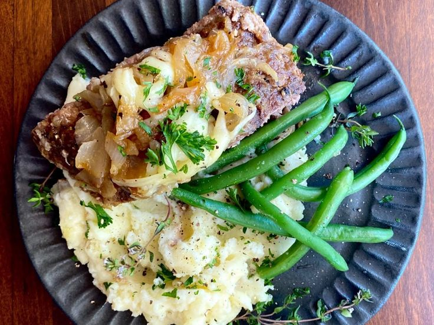

French Onion Meatloaf

Description
A family favorite! The French-fried onions really make this
meatloaf super yummy!Excellent paired with mashed potatoes
and green beans with bacon.
Ingredients
- cooking spray
- cooking spray
- 1 tablespoon ketchup
- 1 tablespoon brown sugar
- .19 pounds ground beef
- 1 ½ tablespoons French-fried onions
- 1 ½ tablespoons bread crumbs
- ¼ large eggs
- 1 tablespoon sour cream
- ½ tablespoon milk
- .13 (1 ounce) package French onion soup mix
- ¼ teaspoon garlic powder
- ⅙ teaspoon salt
- cracked black pepper
- ground ginger
Steps
-
Preheat the oven to 350 degrees F (175 degrees C).
Spray a 9x5-inch loaf pan with cooking spray;
spread ketchup and brown sugar over the bottom.
-
Combine beef, French-fried onions, bread crumbs, eggs, sour
cream, milk, soup mix, garlic, salt, pepper, and ginger
in a large bowl. Mix well and shape into a loaf over the
ketchup and brown sugar.
-
Bake in the preheated oven until no longer pink in the center,
about 1 hour. An instant-read thermometer inserted into the
center should read at least 160 degrees F (70 degrees C).